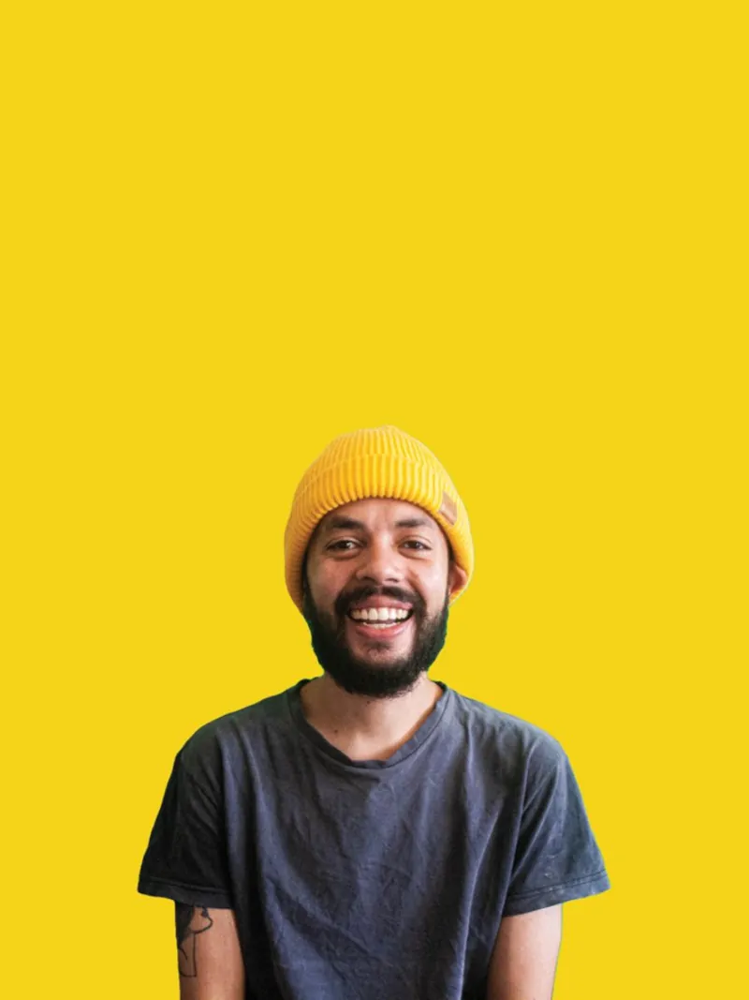

Antônio Henrique.
Design que vira cartaz, marca e movimento.
- Anos de estrada
- 8+
- Projetos entregues
- 60+
- Disciplinas
- 5
01 Cartazes
Cartazes & motion posters
Cinema, games e cultura pop em pôster. Arraste, role ou use as setas do teclado.
02 Branding
Marcas com presença
Identidades visuais para arquitetura, saúde, direito e indústria: do símbolo ao sistema.
Trabalhei com
03 Conteúdo & imagem
Social, foto & editorial
04 Motion & filmes
Imagem em movimento
05 Música
Pizzadelic.
O alter ego musical de Antônio: compositor e produtor que mistura alternativo, eletrônico e pop experimental. Cada lançamento é coletivo, com amigos e artistas convidados somando camadas às faixas.
- Alternativo
- Eletrônico
- Pop experimental

06 Sobre
Antônio Henrique, designer.
Diretor de arte com foco em branding e design digital. Faz a ponte entre a estratégia do cliente e uma estética que se lembra, do briefing à última entrega.
Trabalha o ciclo completo: planejamento, criação, produção e gestão de peças nos canais digitais. Formação em Publicidade & Propaganda e domínio das ferramentas do mercado.
- Faz
- Direção de arte, design, vídeo, fotografia, social media
- Ferramentas
- Adobe Suite, Figma, Blender, CapCut, Meta Ads
- Base
- São Paulo, Brasil
07 Contato
Vamos criar algo junto?
Disponível para freelas, colaborações e projetos de longa duração.